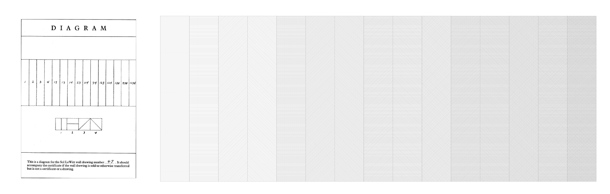

"Conceptual art is not about forms or materials, but about ideas and meanings. It cannot be defined in terms of any medium or style, but rather by the way it questions what art is. In particular, Conceptual art challenges the traditional status of the art object as unique, collectable and/or saleable. Because the work does not take a traditional form it demands a more active response from the viewer, indeed it could be argued that the Conceptual work of art only truly exists in the viewer’s mental participation. This art can take a variety of forms: everyday objects, photographs, maps, videos, charts and especially language itself. Often there will be a combination of such forms. […] Conceptual art has had a determining effect on the thinking of most artists."
"In conceptual art the idea or concept is the most important aspect of the work. When an artist uses a conceptual form of art, it means that all the planning and decisions are made beforehand and the execution is a perfunctory affair. The idea becomes a machine that makes the art." Sol Lewitt
"The ‘purest’ definition of conceptual art would be that it is inquiry into the foundations of the concept ‘art’, as it has come to mean" Joseph Kosuth
”A work of art normally behaves as if it is a statement: ‘This is a sculpture of the Old Testament hero David by Michelangelo’; or ‘This is a portrait of the Mona Lisa’. We may, of course, ask questions such as ‘Why has Michelangelo made David double life size?’ or ‘Who was this Mona Lisa?’, but these questions follow on from an acceptance of the initial statement that the artwork proposes. We accept it bot as a representation and as a being ipso facto art.”
We may encounter Conceptual art in one of four forms:
-Readymade: ”a term invented by Duchamp for an object from the outside world which is claimed or proposed as art, thus deasdnying both the uniqueness of the art object and the necessity of the artist’s hand.”
--An intervention: ”in which some image, text or thing is placed in an unexpected context, thus drawing attention to that context.”
--Documentation: ”where te actual work, concept or action, can only be presented by the evidence of notes, maps, charts or, most frequently, photographs.”
--Words: ”where the concept, proposition or investigation is presented in the form of language.”
"A brief review of the particular conditions of LeWitt’s wall drawings is a useful startin point. Each wall drawing exists first of all as an idea, embodied by set of instructions written by LeWitt. See, for example, the instructions for Wall Drawing #366 form 1982:
'Black arcs using the height of the wall as a radius, and black arcs using the midpoints of the wall as a radius. The arcs are filled in solid and drawn in India ink'
Each drawing is also documented by a small diagram which gives a sense of how the instructions might be followed.

The actual on-site execution of LeWitt’s wall drawings can be done by LeWitt himself (although this is now rarely the case), by a team of his trained assistants who travel around the world on commission, or by teams of artists or others hired locally or recruited as volunteers to execute drawings for a particular exhibition. LeWitt has conceived several series of wall drawings specifically to be drawn by nonartists, and has been known to encourage owners to execute the simpler ones themselves.”
LeWitt has compared his instructions to a musical score and once noted that he liked the idea that one wall drawing can exist simultaneously in different locations. After their exhibition, the drawings can be painted over so as not to proliferate over time. Wall drawings can be sold and resold, and they are routinely drawn for exhibition without being purchased. And as the following, possibly surprising exchange with Andrea Miller-Keller during the early 1980s makes clear, LeWitt has not always considered the ideas for his wall drawings as subject to the normal strictures of private ownership.
Andrea Keller-Miller: When you sell a wall drawing to a private collector or museum, what it is that you think you are selling? The idea? The plan?
Sol LeWitt: Both are inseparable, but the plan can be used without it being bought. The idea may be comprehended by anyone seeing the plan.
Andrea Keller-Miller: Are you selling the right to use an idea that is still yours (because authorship cannot be transferred)?
Sol LeWitt: Ideas cannot be owned. They belong to whomever understands them. The piece takes a physical form and becomes and object. This object may be possessed. ‘A work of art’, says Gertrude Stein, 'is either priceless or worthless.’"
Summarizing, the art is not what we see with our eyes but the idea behind it. The artist has the idea but once he shares it with the rest of the world the idea doesn't belong to him anymore. The image above this text, corresponding to the wall drawing #47, was represente by me following the instructions. When Sol LeWitt was asked about how would he feel if someone executed a wall drawing of him without permission but with care to follow the instructions and in an appropiate site, he answered:
SL: OK.
AKM: Would you consider it an 'authentic' LeWitt Wall Drawing?
SL: Yes, it would be authentic.
AKM: Would you consider such an unauthorized use of wall drawing instructions unethical?
SL: No, it would be a compliment.
This undestanding of ownership opposes to the classic concept of art due to the temporary character of it. Michelangelo's David or Da Vinci's Mona Lisa could be moved from one museum to another because they are physical objects, but there's no other solution for a wall drawing than repainting it. On the other hand, anyone with enough resources and art ability could replicate a LeWitt wall drawing by following the instructions given, but hardly could do the same with the Mona Lisa.
So the main idea behind conceptual art is the that the message, the idea, is more important than the materiality of it. Robert Rauschenberg said in an telegram to the Gallery Iris Clert "This is a portrait of Iris Clert if a say so.". This message, said by telegram as it could have been written in a napkin, is the art itself, not the medium.